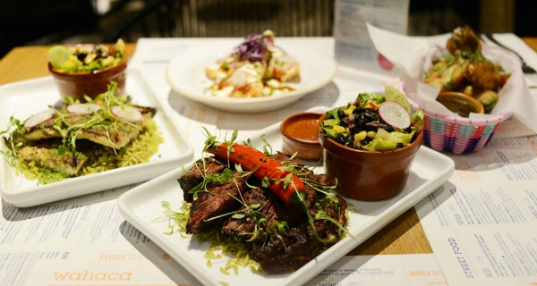
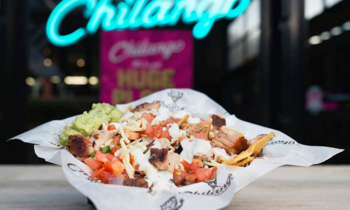
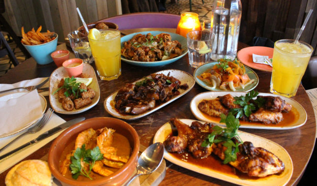

<!DOCTYPE HTML>
       <html>
						<head>
							<link rel="shortcut icon" href="food.png" type="image/x-icon" />
							<title>Mexican Food in Manchester</title>
							<meta name="viewport" content="width=device-width, initial-scale=1">
							<link rel="stylesheet" href="assets/css/main.css" />
              <style>
              img {
              max-width: 100%;
              }
						</head>
						<body>

							<!-- Header -->
								<header id="header" class="alt">
									<div class="inner">
										<h1> Mexican Cuisine </h1>

									</div>
								</header>

								<!-- Wrapper -->
									<div id="wrapper">

										<!-- Banner -->
											<section id="intro" class="main">
												<h2>El Taquero</h2>
												<ul class="actions">
												<h3 class="address">42 Back Turner St, Manchester M4 1FR</h3>
										</a>


					  <div class="introtext">
												<p align="justify"></br>Created by the owners of restaurant Solita, El Taquero is a backstreet 'taquería' which prides itself in being truly Mexican (no burritos or fajitas here!). Instead you will find true Mexican dishes such as the taco, quesadillas and tostadas. Every dish comes with homemade and unique salsas which are made fresh every day. Taco Tuesday is a particular hightlight as every Tuesday you can get a trio of tacos for £3 (£1 each) and there are loads of different fillings on offer, such as chicken tinga, potato and chorizo, and beef. The frijoles (refired black beans) are 'muy deliciosa' and are absolutely amazing when paired alongside tortilla chips. Definitely a worthwhile experience if you love Mexican food or if you're a first timer!
											</br></p>
											<a href="https://www.eltaquero.co.uk"<h10 class="link"><i>Click here to check out the authetic Mexican menu</i></h10>
										</div>

					<br/>
					<br/>


										<h2>Wahaca</h2>
										<h3 class="address">The Corn Exchange, Exchange Square, Manchester M4 3TR</h3>
											</a>
											<div class="introtext">
											<p align="justify"></br>Wahaca is a Mexican chain diner with a lively soundtrack, serving small plates of market-style food and cocktails. Located over 2 floors in the city’s historic Corn Exchange building and spilling onto Exchange Square, Wahaca Manchester brings award winning street food to the heart of Manchester. Their menu features a DIY taco board, a Mexican bowl topped with grilled chicken and churros with chocolate for dessert. If you’re in the mood for a cocktail, Wahaca offers exciting fresh blends with a modern Mexican twist.
										<br/> </p>
									 </br>
										<a href="https://www.wahaca.co.uk"<h10 class="link"><i>Click here to explore Wahaca's menu</i></h10></a>

													</div>
					<br/>
					<br/>
										<h2>Chilango</h2>
										<h3 class="address">50 Oxford St, Manchester M1 5EJ</h3>
											</a>
											<div class="introtext">
														<p align="justify"></br>Having opened three years ago in Manchester’s vibrant city centre on Oxford Street, Chilango is a Mexican chain known for its signature filled tortilla wraps. The restaurant’s interior features eye-catching custom graffiti murals and neon artwork. As well as traditional burritos, diners can look forward to a range of ‘nudos’ (all the fillings without the wrap), tacos, nachos and salads, which are available to eat in or take away.
										<br/> </p>
													<a href="https://www.chilango.co.uk"><i>Check out Chilango's menu here</i></h10></a>
																</div>
					<br/>
					<br/>
													<h2>Las Iguanas</h2>
													<h3 class="address">84 Deansgate, Manchester M3 2ER</h3>
													</a>

													<div class="introtext">
													<p align="justify"></br>Las Iguanas serves flame-grilled Latin American dishes and shared plates in a contemporary chain dining room. They offer a range of fresh Mexican, Brazilian & Latin American food & happy hour cocktails, while catering to vegetarian, vegan and gluten free options. Their a la carte menu has a variety of mouth watering tapas, including nachos, empanadas and halloumi skewers. Las Iguanas’ range of authentic Mexican dishes includes enchiladas, burrito bowls and fajita stacks.
											<br/> </p>
													<a href="https://www.lasiguanas.co.uk"<h10 class="link"><i>Check out the latest offers here.</i></h10></a></br>
													</div>
																		</br>
																			<a href="index.html" class="button big">Back to homepage</a>
											</section>
										</div>
              </body>
				</html>
